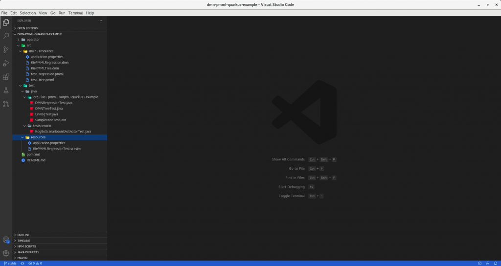
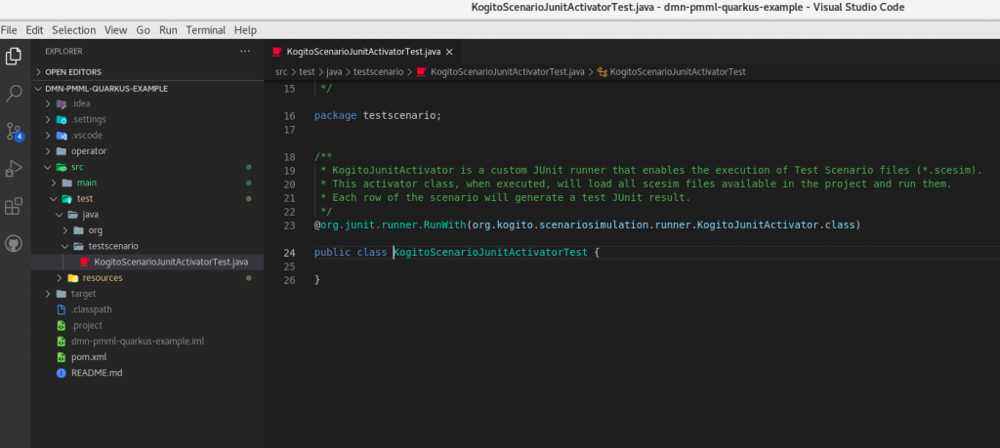
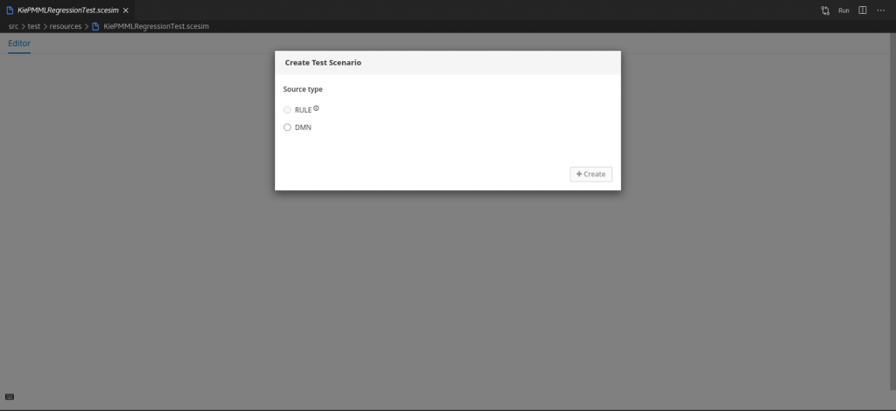
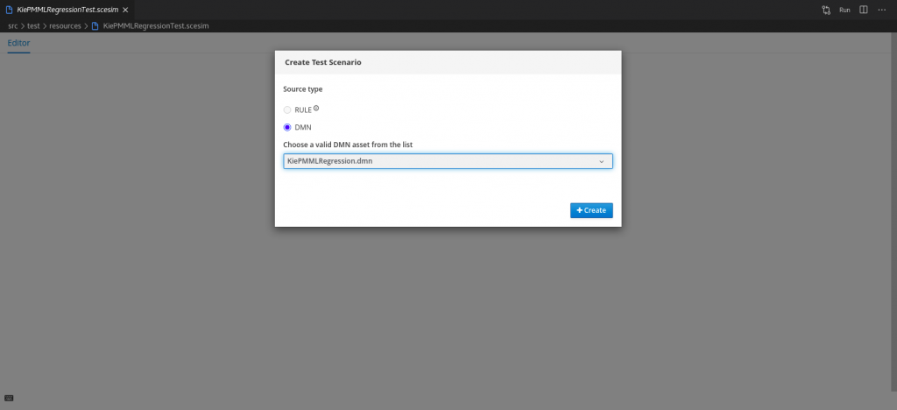
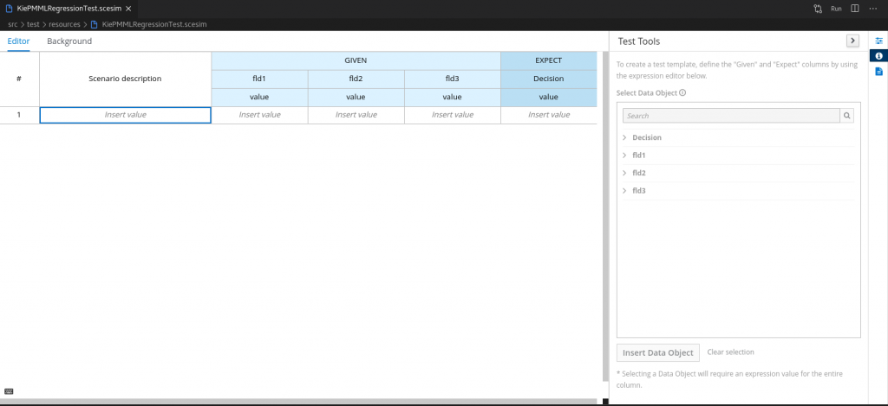
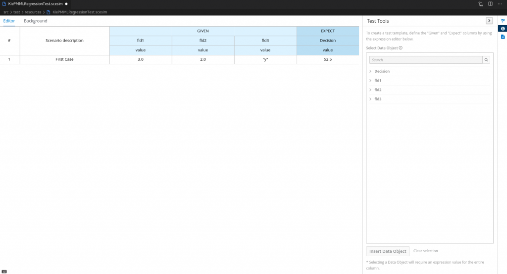
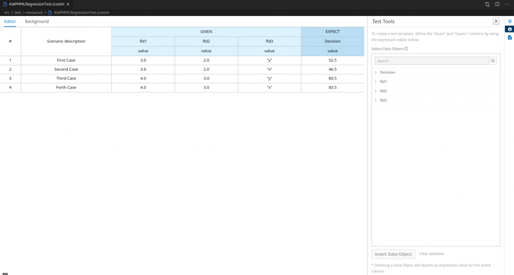
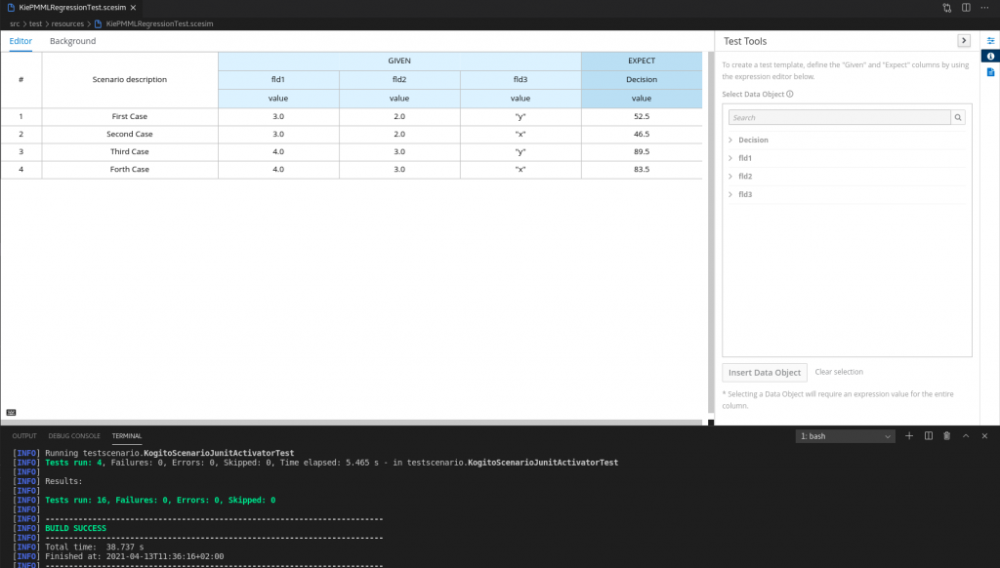
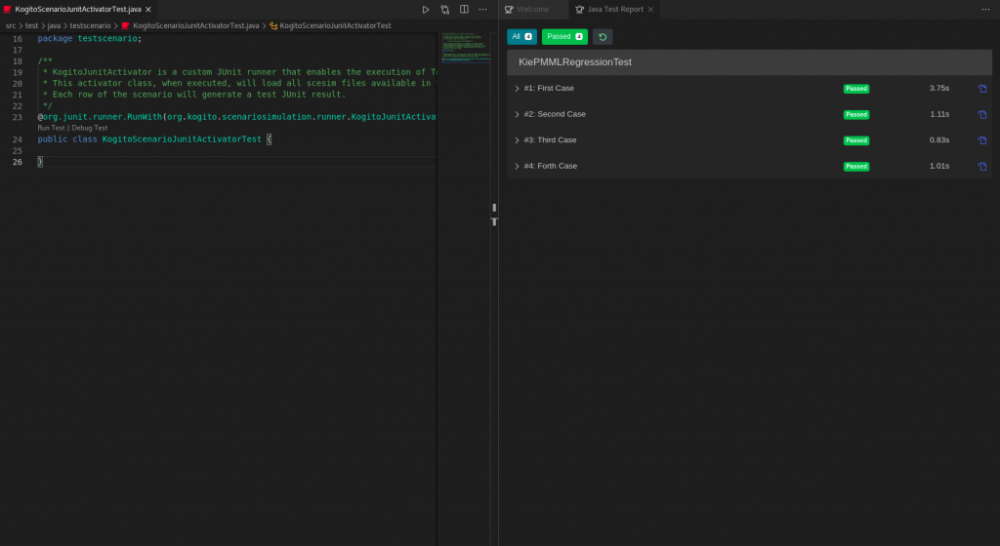
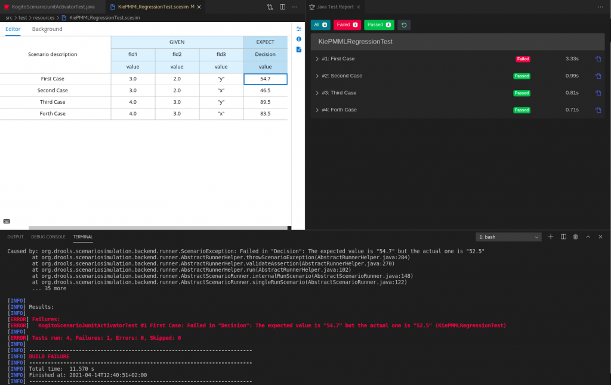

How to use Test Scenario Editor to test your DMN asset in VSCode
Introduction
Testing an asset is a crucial phase for most human activities. As humans, we are able to define very complex algorithms and to design intricated domains with several different possible states. There are no boundaries on what we can create and design. On the other side, as humans, we make mistakes. It represents the main friction to our creativity. Usually, during a creative activity, questions like the following may arise:
- Am I doing it correctly?
- Am I considering all reachable status?
- Am I considering all environments?
- Am I protecting my asset from shallow changes?
A reasonable answer to these questions is to create and rely on a strong Testing phase. In my previous article, I described how to create a DMN asset to include a PMML file. How can we actually check if the resulting DMN file satisfies our expectations? Our Kogito Tooling suite now offers the Test Scenario editor, a tool already present in Business Central, which enables DMN Editor users to test their created DMN files.
Consequently, the aim of this article is to guide you through a step-by-step tutorial describing how to create and use the Test Scenario editor to test the DMN file previously created.
Tutorial
Here, required elements for this guide:
- VSCode (1.46.0+);
- Kogito (1.15.0+)
- DMN Editor plugin or Red Hat Business Automation Bundle (0.9.0+);
- Optional: Language Support for Java(TM) by Red Hat (0.32.0+)
- Cloning kogito-examples repository, which contains the example;
However, I strongly suggest using the latest versions of the above elements.
Project setup
Cloning and using our example
Exactly in the same way described in my previous article, we need to clone kogito-examples repository, open your VSCode editor and go to the kogito-examples/kogito-quarkus-examples/dmn-pmml-quarkus-example directory, which contains the covered example. As a result, you should see the project open in VSCode, as shown in the below screenshot:

The resulting project contains all required files and prerequisites for this tutorial.
Creating a new project
In case we want to create a new project from scratch, we need to focus on four mandatory prerequisites required to correctly use the Test Scenario:
- A Maven project for a Kogito service structure is required. To create a new project from the stretch, you can use the below maven archetype command. This will automatically generate the required folder structure and the project pom.xml file containing all required dependencies inherited from the Kogito project. These are mandatory to correctly use our features, like DMN Compilation, Test Scenario runner, and so on. For this article, we will use Quarkus to run the execution of our project assets.
$ mvn archetype:generate
-DarchetypeGroupId=org.kie.kogito
-DarchetypeArtifactId=kogito-quarkus-archetype
-DgroupId=org.acme -DartifactId=sample-kogito
-DarchetypeVersion=1.5.0.Final
-Dversion=1.0.0-SNAPSHOT- The pom.xml requires the below additional dependency. That represents the engine used to run a Test Scenario asset, the runner, already part of our Kogito assets:
<dependency>
<groupId>org.kie.kogito</groupId>
<artifactId>kogito-scenario-simulation</artifactId>
<scope>test</scope>
</dependency>- Create the KogitoScenarioJunitActivatorTest.java. This file is mandatory to enable the execution of Test Scenario asserts. Behind the scenes, this Activator Java class will run a custom JUnit Runner designed to analyze and execute all scesim files present in the project, based on the logic wrapped in the previous dependency. This file target directory is “src/test/testscenario“. Below, you can find the full class content.
package testscenario;
@org.junit.runner.RunWith(org.kogito.scenariosimulation.runner.KogitoJunitActivator.class)
public class KogitoScenarioJunitActivatorTest {
}
- The last request is to create directory “src/test/resources” directory, that is the location where our scesim files will be kept.
Creating a new Test Scenario
Great! All prerequisites are now set, therefore we are now ready to create our first Test Scenario file! As previously mentioned, the goal is to create a Test Scenario to test "KiePMMLRegression.dmn" DMN asset. Here, the steps:
- Inside the “src/test/resources” directory, create a new file with the “.scesim” extension and a name of your choice.
- Open the previously created file. You should see an empty a Test Scenario creation popup, as shown below:

- Here, select “DMN” type. A selection box with the list of all DMN assets present in the project will appear. Select the “KiePMMLRegression.dmn” item and click “Create” button.

- At this point, you should see the editor automatically populated based on the given DMN KiePMMLRegression asset. As you may notice, the main element of the editor is a grid, composed of columns classified as GIVEN and EXPECT types.
Columns of EXPECT type represent the output of Decision nodes defined in “KiePMMLRegression.dmn“. That asset contains only a decision node “Decision”, therefore only an EXPECT column type is present.
On the other hand, Columns of GIVEN types are the required input to process decisions. In “KiePMMLRegression.dmn” asset, we defined three input nodes required for the “Decision” node. As a result, Test Scenario contains three GIVEN columns.

- The second editor element to analyze is the Test Tools panel, in the right part of the Editor. The goal of this section is to define additional column types in the grid. For this example, we don’t need to modify the automatically created column, which already satisfies our needs.
- Now we can define a Scenario to test if the defined Decision node in “KiePMMLRegression.dmn” works as expected. Every non-header row in the grid represents a single Scenario to test. To understand how to fill data in the row, we need to remind and analyze the Decision logic. As explained in my previous article, that logic relies on an external PMML file, which describes the following linear regression function:

Therefore, an example to test the correctness of that function is:
GIVEN fdl1 = 3, fdl2 = 2 and fdl3 = “y”
EXPECT decision = 52.5
Which basically means: Given fdl1 = 3, fdl2 = 2 and fdl3 = “y” parameters, we expect to have decision = 52.5 as a result. Let’s fill our first scenario accordingly, as shown in the screenshot below:

- Optionally, we can add as many scenarios as we desire, simply adding new rows to the grid and filling data. To perform this action, simply right-click at any point of the grid and select the “Insert row below” item in the resulting Context Menu. An example of 4 scenarios case is shown below:

Executing the Test Scenario
Excellent! It’s now time to run the Test Scenario file, in order to verify the filled scenario is correct.
- As the first action, we need to save the file (CTRL+S). Then, open a Terminal on kogito-examples/kogito-quarkus-examples/dmn-pmml-quarkus-example directory and launch this command:
mvn clean test
- As an alternative, you can launch the test relying on Language Support for Java(TM) by Red Hat, which enables us to run a Test Scenario launching the test from the previously generated “KogitoScenarioJunitActivator.java” file, simply clicking on the “Run Java” button. At the end of the testing phase, a Java Test Report window should appear, showing the test results in a more user-friendly way.

- As the last step of our tutorial, let’s see what happens in case we fill a scenario with wrong data. Considering the First Case scenario, try to change one of the filled values. For instance, we can change the expected value from “52.5” to “54.7”. After saving the file (CTRL+S), run again the testing of the scesim file. At the end of the process, you should see a single failed scenario. The provided error message will report the name of the failed case and the reason for its failure:
KogitoScenarioJunitActivatorTest #1 First Case: Failed in "Decision": The expected value is "54.7" but the actual one is "52.5" (KiePMMLRegressionTest)
Conclusion
With this article, we learned how to test a DMN asset using a Test Scenario Editor, part of DMN Editor VSCode plugin. Undoubtedly, it represents a valid tool to support the creation and the analysis of your DMN assets, which should be strongly considered to increase their robustness and reliability.
Another useful resource you can refer to is MODELING AND DEVELOPMENT OF DECISION SERVICES: DMN WITH KOGITO article, by Matteo Mortari. Here, you can find a very exhaustive video where Matteo creates a Test Scenario following the same steps described in this article.
And if this is still not enough, you can refer to our documentation, which contains a section on Testing the decision logic for a Kogito service using test scenarios.
Thank you for reading!